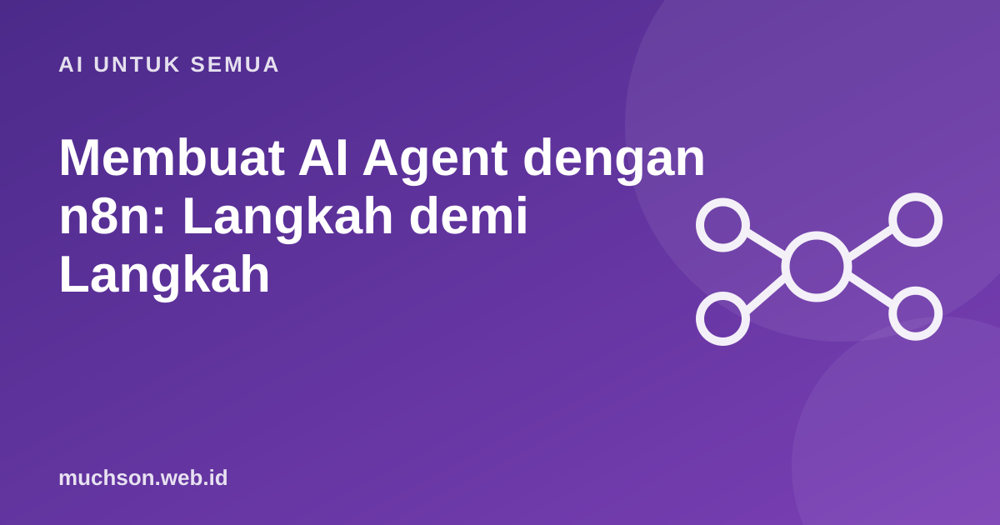

Beranda › Artikel › AI untuk Semua
AI untuk SemuaMembuat AI Agent dengan n8n: Langkah demi Langkah
n8n menyediakan node khusus untuk AI agent yang merangkai model bahasa, alat, dan memori di kanvas yang sama dengan alur otomasi biasa. Hasil terbaik datang dari tugas yang sempit dan batas yang jelas, bukan dari agen serba bisa.

Komponen agen
Langkah membuat
- Tentukan satu tugas sempit, misalnya "menjawab pertanyaan jadwal kelas dari spreadsheet".
- Pilih trigger: pesan chat, webhook, atau jadwal.
- Tambahkan node agen dan hubungkan ke model bahasa pilihan Anda.
- Berikan alat yang dibutuhkan saja: baca sheet, cari dokumen, kirim email.
- Tulis instruksi sistem: peran, batasan, format jawaban, dan apa yang dilakukan bila tidak tahu.
- Tambahkan memori bila perlu mengingat konteks percakapan.
- Uji dengan pertanyaan nyata, termasuk yang sengaja membingungkan.
Menjaga agen tetap aman
Jangan berlebihan
Jika langkahnya selalu sama, alur biasa tanpa agen lebih murah, lebih cepat, dan lebih mudah diprediksi. Gunakan agen hanya untuk bagian yang memerlukan penilaian.
Tanya jawab
Model apa yang cocok untuk agen?
Pilih sesuai tugas, biaya, dan privasi. Uji beberapa model pada pertanyaan nyata Anda sebelum memutuskan.
Bagaimana mengurangi jawaban mengarang?
Batasi sumber ke data Anda, wajibkan jawaban "tidak tahu" bila tidak ada, dan uji dengan pertanyaan jebakan.
Apakah agen bisa berjalan tanpa pengawasan?
Untuk tugas berisiko rendah, ya. Untuk tindakan penting tetap sertakan persetujuan manusia dan pantau log.